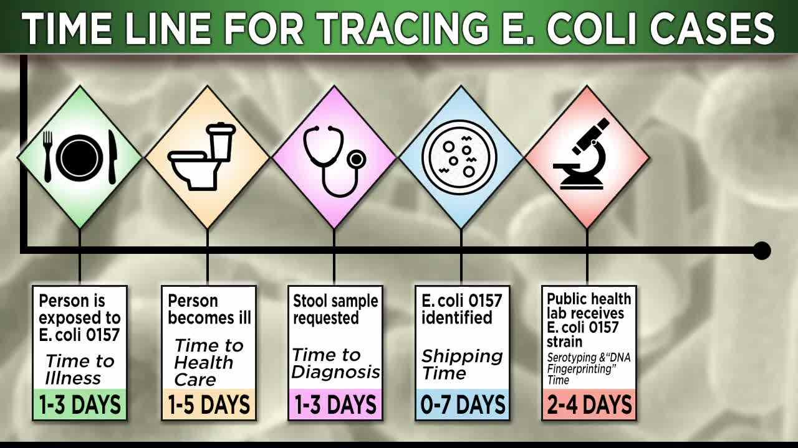

Attendees
- Mr. Mark Andrew (VP Sales)
- Ms. Ana Steele (Area Sales Manager)
- Mr. Jack Oliver (PR Head)
Agenda
- Sales Prediction
- How to boost the sales
- Strategy for next campaign
Review of Meeting Summary
Mark Andrew asked to specify in the meeting summary that the complete description of the workgroup's purpose is to consider the compliance issue of the single sample daily maximum applied to wastwater treatment plant effluent required for meeting the 235 cfu (or mpn)/100ml.
New Purposes
Cuurently, IDEM is hosting 3 workgroups all having something to do with Combined Sewer Overflow communities, including: the rulemaking (LSA Document #05-218) required by Senate Enrolled Act 620 of the 2005 legislative session concerning a CSO wet weather limited use subcategory designation; a rulemaking regarding E. coli limited to compliance issues of the single sample daily maximum; and developing nonrule policy documents from guidance regarding CSOs.
This workgroup, named the E. coli workgroup, is concerned with the compliance issues of the single
sample daily maximum applied to wastewater treatment plant effluent required for meeting the 235 cfu
(or mpn)/100 ml. There is no intention to change the in-stream requirement for meeting the water quality
standard of 235 cfu (or mpn)/100 ml. This workgroup is devoted to the issue of compliance with the
standard. Workgroup members are discussing a variety of ideas to determine compliance, including a
provision that would allow ten percent (10%) of samples to exceed the 235 daily maximum and a
provision that would allow using a geometric mean to determine compliance with the 235 daily
maximum.
Details
Discussion on December 14 among the workgroup members present quickly revealed a preference for the 10% exceedance allowance rather than allowing the use of geometric mean which was determined to be very forgiving of compliance problems.
Comments & Concerns
Clarification was requested to specify in the meeting summary that the problem with sampling has to do with the innate problems of bacteriological sample taking.